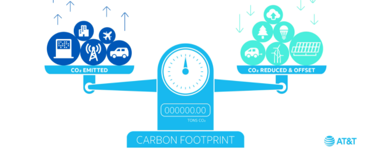

As the world becomes more aware that carbon dioxide and other greenhouse gas (GHG) emissions have serious effects on our atmosphere and global climate, new methodologies are surfacing to achieve carbon mitigation and sequestration. One such method is using carbon credits, which work to funnel money toward sustainability projects that reduce the overall amount of carbon in the atmosphere.
Carbon credits provide individuals, businesses, and large organizations the opportunity to offset their greenhouse gas emissions. While much of the world still relies on fossil fuels for energy, carbon credits provide an excellent option to make a difference in the global fight against climate change.
Whether you are looking to reduce your carbon footprint or reduce your business’s carbon emissions, carbon offset credits are an excellent place to look. Today, we will cover what carbon credits do and how they work. We will look into what project types carbon credits support and how those projects can make a difference in the fight against global warming and climate change. Finally, we will cover how you can purchase carbon credits to become involved in the commitment to a green future.
Sustainable Development Goals (SDGs) are a popular topic worldwide, and you’ve probably seen organizations displaying their SDG contributions with these colorful icons. How are they justifying their SDG claims? How can you feel confident when purchasing credits, and what are the levels of assurance for SDG claims? What tools do professionals use to analyze their projects?
In the voluntary credit market, plastic credits have been established to represent 1 metric ton of plastic waste collected from the environment. Projects like this can also offer other benefits that improve the community’s well-being and the environment – these benefits can align with the Sustainable Development Goals.

The WaY (Women and Youth) plastic collection project in Cote d’Ivoire, developed by Conceptos Plásticos, collects plastic waste that would have otherwise been left in the environment. The plastic is turned into construction bricks, which are used to build schools for local communities. The project focuses on hiring women to increase empowerment and economic opportunities for a heavily underserved population. ClimeCo is partnering with the WaY Project to generate plastic credits from its plastic collection activities.
It is essential for an organization to provide a good faith effort when presenting their SDG impact claims. When purchasing credits from a project with these claims, we highly recommend that you contact them and ask what steps they took to assess their SDG impact. To help you with this, let us walk you through the public SDG tools we used to determine our project’s biggest SDG benefits.